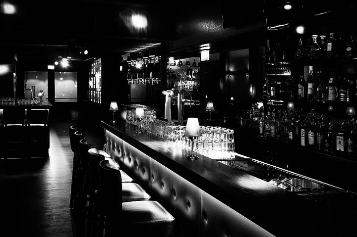

About
Jon's began in 1984 by Chuck Clifford and Bob Heathfield. Both were barmen and business men who first began studying in the hospitality and food industry at the University of Michigan. Read More
They decided to start a partnership with their first business Jon's Goodtime Bar in and Grill which was located in Garden City Michigan. The Business thrived for many years and became a success, and is still open today. In 2014 Chuck and Bob decided to head for the big time and start their new bar in the big city. Today Noir Bar is a nighttime favorite for many city goers looking for a little more classic and dark atmosphere.
